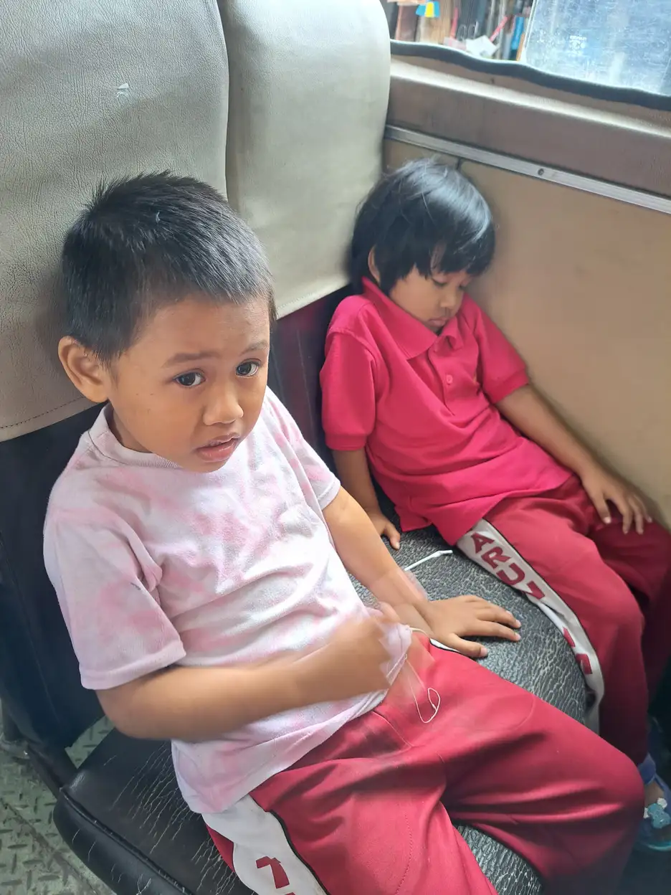
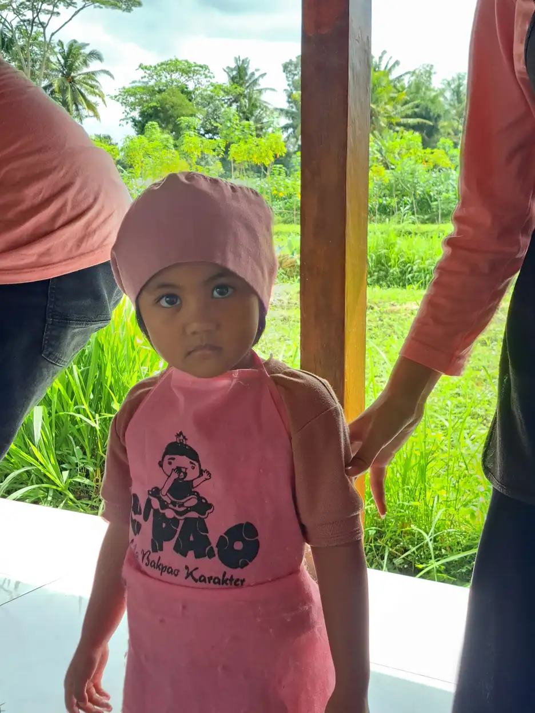

Sebagai orang tua, wajar jika Anda merasa bingung ketika mendengar istilah autis dan ADHD. Kedua kondisi ini memang sama-sama merupakan gangguan perkembangan neurologis pada anak, dan tidak jarang gejalanya terlihat mirip di permukaan. Namun, memahami perbedaan autis dan ADHD sangat penting agar anak mendapatkan diagnosis yang akurat serta penanganan yang benar-benar sesuai dengan kebutuhannya.
Di Yayasan Ukhuwah Kaffah Amanatullah (YUKA), kami telah mendampingi banyak anak berkebutuhan khusus, baik yang memiliki autisme, ADHD, maupun keduanya sekaligus. Pengalaman kami di lapangan menunjukkan bahwa ketika orang tua dan pendidik memahami perbedaan kedua kondisi ini, mereka bisa memberikan dukungan yang jauh lebih efektif. Artikel ini disusun berdasarkan literatur ilmiah terkini dan pengalaman nyata kami dalam mendampingi anak berkebutuhan khusus (ABK).
Mari kita bahas secara mendalam tentang autis vs ADHD, mulai dari pengertian, gejala, diagnosis, hingga penanganan yang tepat untuk masing-masing kondisi.
Daftar Isi
- Pengertian Autis dan ADHD
- Perbedaan Gejala Autis dan ADHD
- Apakah Anak Bisa Mengalami Autis dan ADHD Bersamaan?
- Memahami Autis Berat (Level 3 ASD)
- Cara Diagnosis Autis vs ADHD
- Penanganan yang Tepat untuk Masing-Masing Kondisi
- Pengalaman YUKA Mendampingi Anak dengan Autis dan ADHD
- FAQ Seputar Perbedaan Autis dan ADHD
Pengertian Autis dan ADHD
Sebelum membahas perbedaan autis dan ADHD, penting bagi kita untuk memahami definisi masing-masing kondisi secara terpisah. Dengan pemahaman yang kuat terhadap dasar-dasar kedua kondisi ini, kita akan lebih mudah mengenali perbedaannya dalam kehidupan sehari-hari.
Apa Itu Autisme (ASD)?
Autisme, atau yang secara resmi disebut Autism Spectrum Disorder (ASD), adalah gangguan perkembangan neurologis yang memengaruhi cara seseorang berkomunikasi, berinteraksi secara sosial, dan berperilaku. Kata "spektrum" dalam istilah ini menunjukkan bahwa autisme memiliki rentang yang sangat luas, mulai dari yang ringan hingga yang sangat berat. Untuk penjelasan lebih lengkap tentang autisme, Anda bisa membaca artikel kami tentang autisme adalah: pengertian, gejala, dan penanganannya.
Menurut DSM-5 (Diagnostic and Statistical Manual of Mental Disorders edisi kelima), ciri utama autisme mencakup dua area besar. Pertama, kesulitan dalam komunikasi dan interaksi sosial, seperti sulit memahami ekspresi wajah, bahasa tubuh, dan konteks percakapan. Kedua, pola perilaku, minat, atau aktivitas yang terbatas dan repetitif, misalnya gerakan berulang (stimming), keterikatan kuat pada rutinitas tertentu, atau minat yang sangat intens terhadap topik spesifik.
Autisme biasanya terdeteksi pada usia dini, sekitar 18 bulan hingga 3 tahun, meskipun pada beberapa kasus baru teridentifikasi di usia sekolah. Data dari Centers for Disease Control and Prevention (CDC) menunjukkan bahwa prevalensi autisme terus meningkat, dengan perkiraan terbaru sekitar 1 dari 36 anak terdiagnosis ASD.
Apa Itu ADHD?
ADHD (Attention Deficit Hyperactivity Disorder) adalah gangguan perkembangan neurologis yang ditandai dengan kesulitan memusatkan perhatian, perilaku hiperaktif, dan impulsivitas yang tidak sesuai dengan usia perkembangan anak. Untuk pemahaman menyeluruh tentang ADHD, silakan baca artikel kami tentang ADHD adalah: pengertian, gejala, dan cara menangani.
ADHD dibagi menjadi tiga tipe. Tipe pertama adalah predominantly inattentive, di mana anak lebih banyak menunjukkan kesulitan fokus tanpa hiperaktivitas yang mencolok. Tipe kedua adalah predominantly hyperactive-impulsive, dengan gejala hiperaktivitas dan impulsivitas yang dominan. Tipe ketiga adalah combined type, yang merupakan gabungan dari kedua gejala dan menjadi tipe yang paling sering ditemukan.
ADHD biasanya mulai terlihat jelas pada usia sekolah dasar, sekitar 6-7 tahun, meskipun gejalanya sebenarnya sudah muncul sebelum usia 12 tahun. Menurut WHO, sekitar 5-7% anak di seluruh dunia mengalami ADHD, menjadikannya salah satu gangguan perkembangan paling umum pada anak.
Persamaan Mendasar
Baik autisme maupun ADHD sama-sama merupakan gangguan neurodevelopmental (perkembangan saraf) yang bersifat bawaan. Keduanya bukan disebabkan oleh pola asuh yang salah, kurangnya kasih sayang, atau faktor lingkungan semata. Kedua kondisi ini memerlukan pendekatan penanganan yang profesional, penuh kesabaran, dan berbasis bukti ilmiah.
Perbedaan Gejala Autis dan ADHD
Memahami gejala autis dan ADHD secara rinci akan membantu orang tua dan pendidik mengenali tanda-tanda yang muncul pada anak. Meskipun ada beberapa gejala yang terlihat serupa dari luar, penyebab dan karakteristik mendasarnya sangat berbeda. Berikut adalah perbandingan detail antara autis vs ADHD berdasarkan berbagai aspek.
| Aspek | Autisme (ASD) | ADHD |
|---|---|---|
| Komunikasi | Kesulitan memahami dan menggunakan bahasa verbal maupun nonverbal. Bisa mengalami keterlambatan bicara, echolalia, atau komunikasi yang sangat literal. | Kemampuan bahasa umumnya berkembang normal. Masalah komunikasi lebih pada kebiasaan menyela pembicaraan, berbicara berlebihan, atau tidak mendengarkan lawan bicara. |
| Interaksi Sosial | Kesulitan mendasar dalam memahami isyarat sosial, ekspresi wajah, dan membangun hubungan timbal balik. Cenderung menarik diri atau tidak memahami aturan sosial yang tidak tertulis. | Umumnya ingin berteman dan berinteraksi, tetapi kesulitan menjaga pertemanan karena perilaku impulsif, tidak sabar menunggu giliran, atau terlalu mendominasi. |
| Perilaku | Perilaku repetitif dan stereotipik (stimming), keterikatan kuat pada rutinitas, minat terbatas yang sangat intens, sensitivitas sensorik yang tinggi. | Hiperaktivitas motorik (sulit duduk diam, selalu bergerak), impulsivitas (bertindak tanpa berpikir), dan kesulitan mengendalikan respons emosional. |
| Fokus | Bisa sangat fokus (hiperfokus) pada minat khusus selama berjam-jam, tetapi sulit beralih ke aktivitas lain yang tidak diminati. | Kesulitan mempertahankan fokus pada kebanyakan tugas, tetapi bisa hiperfokus pada hal yang sangat menarik seperti video game. Mudah terdistraksi oleh stimulasi eksternal. |
| Rutinitas | Sangat membutuhkan rutinitas dan kesamaan. Perubahan mendadak bisa menyebabkan stres berat, tantrum, atau meltdown. | Cenderung bosan dengan rutinitas dan mencari hal-hal baru. Kesulitan mengikuti rutinitas yang terstruktur karena mudah terdistraksi. |
| Usia Terdiagnosis | Umumnya terdeteksi pada usia 18-36 bulan. Diagnosis formal biasanya dilakukan antara usia 2-4 tahun. | Biasanya terdeteksi pada usia sekolah, sekitar 6-7 tahun, ketika tuntutan akademik mulai meningkat. |
| Prevalensi | Sekitar 1 dari 36 anak (CDC, 2023). Lebih sering terdiagnosis pada laki-laki dengan rasio 4:1. | Sekitar 5-7% anak secara global (WHO). Lebih sering terdiagnosis pada laki-laki, meskipun perempuan sering tidak terdeteksi. |
Perbedaan dalam Kehidupan Sehari-hari
Dalam kehidupan sehari-hari, perbedaan antara anak autis dan anak ADHD bisa diamati dari beberapa situasi berikut:
- Di ruang kelas: Anak autis mungkin duduk diam tetapi tidak berpartisipasi dalam diskusi kelompok dan terlihat "berada di dunianya sendiri." Anak ADHD justru mungkin sangat aktif berpartisipasi, tetapi sering menyela, tidak menunggu giliran, atau berpindah-pindah aktivitas tanpa menyelesaikan yang sebelumnya.
- Saat bermain: Anak autis cenderung bermain sendiri dengan cara yang repetitif, misalnya menjajarkan mainan atau memutar-mutar roda mobil-mobilan. Anak ADHD ingin bermain dengan teman tetapi sering berkonflik karena tidak sabar menunggu giliran atau mengubah aturan permainan secara impulsif.
- Respons terhadap perubahan: Anak autis bisa mengalami meltdown ketika rutinitas berubah, misalnya jalan pulang yang berbeda dari biasanya. Anak ADHD justru mungkin menyambut perubahan karena mereka mudah bosan, tetapi kesulitan beradaptasi secara terstruktur.
- Kontak mata: Anak autis sering menghindari kontak mata karena merasa tidak nyaman atau tidak memahami fungsinya secara sosial. Anak ADHD umumnya bisa melakukan kontak mata, tetapi mungkin terlihat "tidak mendengarkan" karena pikirannya berpindah ke hal lain.

Gejala yang Sering Tumpang Tindih
Salah satu alasan mengapa banyak orang bingung membedakan autis vs ADHD adalah karena ada beberapa gejala yang tumpang tindih, antara lain:
- Kesulitan fokus: Baik anak autis maupun ADHD bisa terlihat sulit fokus, tetapi penyebabnya berbeda. Anak autis sulit fokus pada hal yang tidak menjadi minat khususnya, sementara anak ADHD memang memiliki gangguan neurologis dalam mekanisme pemusatan perhatian.
- Kesulitan bersosialisasi: Keduanya bisa mengalami masalah dalam pergaulan, namun anak autis kesulitan memahami aturan sosial, sementara anak ADHD memahami aturan tetapi sulit mengendalikan impulsnya.
- Ledakan emosi: Anak autis bisa mengalami meltdown akibat overstimulasi sensorik atau perubahan rutinitas. Anak ADHD bisa mengalami ledakan emosi karena frustrasi atau kesulitan mengendalikan impulsnya.
- Kesulitan di sekolah: Baik anak autis maupun ADHD bisa mengalami kesulitan akademik, tetapi penyebab dan jenisnya berbeda sehingga memerlukan strategi penanganan yang berlainan.
Apakah Anak Bisa Mengalami Autis dan ADHD Bersamaan?
Jawaban singkatnya: ya, sangat bisa. Kondisi ketika seorang anak mengalami autisme dan ADHD secara bersamaan disebut komorbiditas autis ADHD. Ini bukan kondisi yang jarang terjadi. Justru, penelitian menunjukkan bahwa komorbiditas kedua kondisi ini cukup umum ditemui.
Sebelum tahun 2013, panduan diagnostik DSM-IV tidak mengizinkan diagnosis ganda autisme dan ADHD. Artinya, jika seorang anak sudah didiagnosis autisme, maka gejala ADHD yang muncul dianggap sebagai bagian dari autisme itu sendiri. Hal ini menyebabkan banyak anak tidak mendapatkan penanganan ADHD yang sebenarnya mereka butuhkan.
Namun, sejak DSM-5 dirilis pada tahun 2013, diagnosis ganda autisme dan ADHD sudah diperbolehkan. Perubahan ini sangat penting karena memungkinkan profesional kesehatan memberikan penanganan yang lebih komprehensif dan tepat sasaran untuk anak autis ADHD.
Data dan Fakta Komorbiditas Autis-ADHD
- Sekitar 30-80% anak dengan autisme juga menunjukkan gejala ADHD yang signifikan secara klinis.
- Sekitar 20-50% anak dengan ADHD memiliki ciri-ciri autisme yang memenuhi kriteria diagnostik.
- Anak laki-laki lebih sering mengalami komorbiditas ini dibandingkan anak perempuan.
- Anak dengan komorbiditas autis-ADHD cenderung mengalami tantangan yang lebih kompleks dalam kehidupan sehari-hari dibandingkan anak yang hanya memiliki salah satu kondisi.
- Penelitian genetik menunjukkan bahwa autisme dan ADHD berbagi beberapa faktor risiko genetik yang sama, yang menjelaskan mengapa kedua kondisi ini sering muncul bersamaan.
Tantangan Anak dengan Komorbiditas Autis-ADHD
Anak yang mengalami komorbiditas autis ADHD menghadapi tantangan ganda yang memerlukan perhatian khusus. Dari sisi autisme, mereka kesulitan dalam komunikasi dan interaksi sosial. Dari sisi ADHD, mereka juga mengalami kesulitan dalam memusatkan perhatian dan mengendalikan impuls. Kombinasi ini bisa membuat proses belajar dan sosialisasi menjadi jauh lebih menantang.
Beberapa tantangan spesifik yang sering dihadapi anak dengan komorbiditas ini meliputi: kesulitan yang lebih besar dalam fungsi eksekutif otak (perencanaan, pengorganisasian, dan pengambilan keputusan), risiko lebih tinggi mengalami gangguan kecemasan dan depresi, kesulitan yang lebih besar dalam mengelola emosi, serta tantangan yang lebih kompleks dalam lingkungan sekolah.
"Setiap anak adalah unik, termasuk anak yang memiliki autisme dan ADHD bersamaan. Kunci keberhasilan pendampingan adalah memahami kebutuhan individual mereka, bukan sekadar mengikuti label diagnosisnya." - Tim Pendidik YUKA
Kabar baiknya, dengan diagnosis yang tepat dan program intervensi yang komprehensif, anak dengan komorbiditas autis-ADHD tetap bisa berkembang dan mencapai potensi terbaiknya. Di YUKA, kami telah menyaksikan sendiri bagaimana anak-anak dengan tantangan ganda ini tumbuh menjadi individu yang semakin mandiri dan percaya diri. Pemahaman tentang peran orang tua dalam pendidikan inklusi sangat krusial dalam mendukung perjalanan ini.
Memahami Autis Berat (Level 3 ASD)
Ketika membahas autis berat, kita perlu memahami bahwa autisme adalah spektrum dengan tingkat keparahan yang berbeda-beda. DSM-5 mengklasifikasikan autisme menjadi tiga level berdasarkan tingkat dukungan yang dibutuhkan.
Tiga Level Autisme Menurut DSM-5
- Level 1 (Membutuhkan Dukungan): Anak pada level ini bisa berkomunikasi secara verbal, tetapi mengalami kesulitan dalam memulai percakapan atau menjaga interaksi sosial. Mereka mungkin terlihat "aneh" dalam pergaulan, memiliki minat yang terbatas, dan kesulitan beralih antar aktivitas. Dengan dukungan yang tepat, anak Level 1 biasanya bisa belajar di sekolah reguler atau inklusi.
- Level 2 (Membutuhkan Dukungan Substansial): Anak pada level ini memiliki keterbatasan komunikasi yang lebih jelas, baik verbal maupun nonverbal. Interaksi sosial lebih terbatas, perilaku repetitif lebih menonjol, dan mereka cukup kesulitan beradaptasi dengan perubahan. Anak Level 2 memerlukan dukungan yang lebih intensif di sekolah dan di rumah.
- Level 3 - Autis Berat (Membutuhkan Dukungan Sangat Substansial): Ini adalah tingkat autisme yang paling membutuhkan pendampingan intensif. Anak dengan autis berat memiliki keterbatasan komunikasi yang sangat signifikan dan memerlukan bantuan penuh dalam aktivitas sehari-hari.
Karakteristik Autis Berat (Level 3 ASD)
Anak dengan autis berat menunjukkan karakteristik yang cukup spesifik. Dalam aspek komunikasi, mereka biasanya memiliki kemampuan verbal yang sangat terbatas. Beberapa anak autis berat mungkin tidak berbicara sama sekali (nonverbal), sementara yang lain mungkin hanya memiliki beberapa kata atau frasa. Penggunaan komunikasi nonverbal seperti menunjuk, melambaikan tangan, atau ekspresi wajah juga sangat terbatas.
Dalam aspek interaksi sosial, anak autis berat menunjukkan kesulitan yang sangat mendasar. Mereka mungkin tidak menyadari keberadaan orang lain di sekitarnya, tidak merespons panggilan namanya, dan tidak menunjukkan minat untuk berinteraksi. Kontak mata biasanya sangat minim atau tidak ada.
Dari sisi perilaku, anak autis berat menunjukkan pola perilaku repetitif yang sangat kaku dan intens. Mereka bisa menghabiskan waktu berjam-jam untuk melakukan gerakan yang sama, seperti menggoyang-goyangkan tangan (hand flapping), berputar-putar, atau memainkan objek tertentu secara berulang. Perubahan sekecil apa pun dalam rutinitas bisa memicu meltdown yang sangat intens.

Pendampingan untuk Anak Autis Berat
Anak dengan autis berat memerlukan pendampingan yang sangat intensif dan konsisten. Beberapa pendekatan yang terbukti efektif meliputi:
- Terapi ABA (Applied Behavior Analysis): Terapi ini menggunakan prinsip-prinsip perilaku untuk mengajarkan keterampilan baru dan mengurangi perilaku yang menghambat. Terapi ABA dianggap sebagai salah satu intervensi paling efektif untuk anak autis berat, terutama jika dimulai sejak usia dini.
- Terapi wicara: Sangat penting untuk membantu anak autis berat mengembangkan kemampuan komunikasi, baik verbal maupun melalui komunikasi alternatif seperti PECS (Picture Exchange Communication System) atau perangkat AAC (Augmentative and Alternative Communication). Pelajari lebih lanjut tentang terapi wicara untuk anak berkebutuhan khusus.
- Terapi okupasi: Membantu anak mengurangi sensitivitas sensorik dan mengembangkan keterampilan motorik halus yang diperlukan dalam aktivitas sehari-hari. Baca artikel kami tentang terapi okupasi dan manfaatnya.
- Pendampingan one-on-one: Anak autis berat biasanya memerlukan pendamping khusus yang mendampingi mereka sepanjang hari, baik di sekolah maupun dalam aktivitas sehari-hari.
- Lingkungan yang terstruktur: Menciptakan lingkungan yang sangat terstruktur, dengan jadwal visual yang jelas, rutinitas yang konsisten, dan minimnya rangsangan sensorik yang berlebihan.
Catatan Penting tentang Autis Berat
Meskipun autis berat (Level 3) merupakan tingkat autisme yang membutuhkan dukungan paling intensif, penting untuk diingat bahwa setiap anak tetap memiliki potensi untuk berkembang. Kemajuan mungkin berjalan lebih lambat dibandingkan anak pada level lainnya, tetapi dengan intervensi dini yang tepat dan konsisten, banyak anak autis berat menunjukkan peningkatan signifikan dalam komunikasi, kemandirian, dan kualitas hidup secara keseluruhan.
Cara Diagnosis Autis vs ADHD
Proses diagnosis yang akurat sangat penting karena penanganan untuk autisme dan ADHD berbeda secara signifikan. Kesalahan diagnosis bisa menyebabkan anak mendapatkan intervensi yang tidak tepat, yang pada akhirnya menghambat perkembangannya. Berikut adalah penjelasan tentang bagaimana kedua kondisi ini didiagnosis.
Proses Diagnosis Autisme
Diagnosis autisme melibatkan evaluasi komprehensif yang biasanya dilakukan oleh tim multidisiplin, meliputi psikiater anak, psikolog klinis, dan dokter spesialis anak tumbuh kembang. Proses diagnosis autisme meliputi beberapa tahap berikut:
- Skrining perkembangan: Dokter anak melakukan skrining rutin pada usia 18 dan 24 bulan menggunakan alat skrining standar seperti M-CHAT (Modified Checklist for Autism in Toddlers).
- Evaluasi perkembangan komprehensif: Jika hasil skrining menunjukkan adanya risiko, anak dirujuk untuk evaluasi lebih mendalam yang mencakup observasi perilaku, wawancara orang tua, dan tes perkembangan.
- Penggunaan alat diagnostik standar: Profesional menggunakan alat diagnostik baku seperti ADOS-2 (Autism Diagnostic Observation Schedule) dan ADI-R (Autism Diagnostic Interview-Revised) untuk menilai perilaku anak secara terstruktur.
- Penilaian kognitif dan bahasa: Tes IQ, tes kemampuan bahasa, dan penilaian fungsi adaptif dilakukan untuk memahami profil kemampuan anak secara keseluruhan.
- Penyingkiran kondisi lain: Tes pendengaran, tes penglihatan, dan pemeriksaan medis lainnya dilakukan untuk memastikan gejala yang muncul bukan disebabkan oleh kondisi medis lain.
Proses Diagnosis ADHD
Diagnosis ADHD juga memerlukan evaluasi yang menyeluruh, biasanya dilakukan oleh psikiater anak, psikolog klinis, atau dokter spesialis anak. Tahapannya meliputi:
- Wawancara klinis: Dokter atau psikolog melakukan wawancara mendalam dengan orang tua tentang riwayat perkembangan anak, riwayat kesehatan keluarga, dan pola perilaku di rumah.
- Pengumpulan informasi dari sekolah: Guru diminta mengisi kuesioner perilaku standar dan memberikan laporan tentang perilaku anak di lingkungan sekolah.
- Observasi langsung: Profesional mengamati perilaku anak selama sesi pemeriksaan untuk melihat tanda-tanda inatensi, hiperaktivitas, dan impulsivitas.
- Kuesioner perilaku standar: Alat bantu seperti Conners Rating Scales atau Vanderbilt Assessment Scales digunakan untuk menilai gejala ADHD secara terstruktur.
- Tes neuropsikologis: Tes fungsi eksekutif, tes perhatian berkelanjutan (continuous performance test), dan tes kecerdasan dilakukan untuk mendapatkan gambaran kognitif yang lebih lengkap.
- Penyingkiran kondisi lain: Gangguan kecemasan, depresi, gangguan belajar spesifik, masalah tidur, dan kondisi medis lain perlu disingkirkan sebelum diagnosis ADHD ditegakkan.
Mengapa Diagnosis Bisa Membingungkan?
Ada beberapa alasan mengapa proses diagnosis autis vs ADHD bisa menjadi rumit:
- Gejala yang tumpang tindih: Seperti yang sudah dibahas, banyak gejala autisme dan ADHD yang terlihat serupa dari luar, terutama dalam hal kesulitan fokus dan masalah sosial.
- Komorbiditas: Anak bisa memiliki kedua kondisi sekaligus, sehingga gejala satu kondisi bisa menutupi atau memperburuk gejala kondisi lainnya.
- Perbedaan berdasarkan gender: Anak perempuan dengan autisme atau ADHD sering menunjukkan gejala yang berbeda dari anak laki-laki, yang membuat deteksi lebih sulit. Anak perempuan autis cenderung lebih bisa "masking" (menyembunyikan gejala), sementara anak perempuan ADHD sering terdiagnosis terlambat karena gejala inatensi lebih dominan daripada hiperaktivitas.
- Variabilitas antar individu: Setiap anak menunjukkan kombinasi gejala yang unik, sehingga tidak ada dua anak autis atau dua anak ADHD yang persis sama.
Oleh karena itu, sangat penting untuk melakukan diagnosis melalui profesional yang berpengalaman dan tidak terburu-buru memberikan label pada anak. Proses diagnostik yang menyeluruh akan memastikan bahwa anak mendapatkan pemahaman dan penanganan yang tepat. Baca artikel kami tentang tips mendampingi anak autis untuk panduan praktis selama proses ini.
Penanganan yang Tepat untuk Masing-Masing Kondisi
Setelah memahami perbedaan autis dan ADHD, langkah selanjutnya yang paling penting adalah mengetahui penanganan yang tepat untuk masing-masing kondisi. Pendekatan yang berhasil untuk autisme belum tentu efektif untuk ADHD, dan sebaliknya. Berikut adalah panduan penanganan untuk kedua kondisi.
Penanganan untuk Anak dengan Autisme
Penanganan autisme berfokus pada pengembangan komunikasi, keterampilan sosial, dan kemandirian anak. Beberapa pendekatan utama meliputi:
- Terapi ABA (Applied Behavior Analysis): Terapi berbasis bukti yang paling banyak diteliti untuk autisme. Terapi ABA menggunakan teknik penguatan positif untuk mengajarkan keterampilan baru, mulai dari komunikasi dasar hingga keterampilan akademik dan sosial. Intensitas yang direkomendasikan adalah 20-40 jam per minggu, terutama untuk anak di bawah usia 5 tahun.
- Terapi wicara dan bahasa: Membantu anak mengembangkan kemampuan komunikasi, baik verbal maupun nonverbal. Terapi wicara sangat penting untuk anak autis yang mengalami keterlambatan bicara atau kesulitan dalam pragmatik bahasa (penggunaan bahasa dalam konteks sosial).
- Terapi okupasi: Membantu anak mengatasi tantangan sensorik dan mengembangkan keterampilan motorik halus. Terapi okupasi juga membantu anak belajar keterampilan hidup sehari-hari seperti berpakaian, makan sendiri, dan menulis.
- Terapi sosial: Program yang dirancang khusus untuk mengajarkan keterampilan sosial, seperti membaca ekspresi wajah, memahami perspektif orang lain, dan berpartisipasi dalam percakapan.
- Intervensi sensorik: Membantu anak mengelola sensitivitas sensorik melalui diet sensorik yang disesuaikan, penggunaan alat bantu sensorik, dan modifikasi lingkungan.
- Pendidikan inklusi: Lingkungan belajar yang inklusif, seperti yang diterapkan di Sekolah Inklusi Taruna Imani YUKA, memungkinkan anak autis belajar bersama teman-teman sebaya dengan dukungan yang disesuaikan.
Penanganan untuk Anak dengan ADHD
Penanganan ADHD berfokus pada pengelolaan gejala inatensi, hiperaktivitas, dan impulsivitas. Pendekatan utamanya meliputi:
- Terapi perilaku (Behavioral Therapy): Pendekatan pertama yang direkomendasikan, terutama untuk anak di bawah 6 tahun. Melibatkan pelatihan orang tua dan guru untuk menerapkan strategi manajemen perilaku yang konsisten, dengan penekanan pada penguatan positif.
- Modifikasi lingkungan belajar: Penyesuaian di ruang kelas dan di rumah, seperti duduk di barisan depan, memecah tugas besar menjadi tugas kecil, menggunakan timer dan jadwal visual, serta memberikan jeda bergerak secara berkala.
- Pelatihan fungsi eksekutif: Program yang membantu anak mengembangkan kemampuan perencanaan, pengorganisasian, manajemen waktu, dan pengambilan keputusan.
- Aktivitas fisik terstruktur: Olahraga teratur seperti berenang, bersepeda, atau seni bela diri terbukti membantu meningkatkan fokus dan mengurangi hiperaktivitas pada anak ADHD.
- Pengobatan medis (jika diperlukan): Untuk kasus ADHD sedang hingga berat, dokter mungkin merekomendasikan pengobatan seperti metilfenidat. Keputusan ini harus diambil bersama antara orang tua dan dokter spesialis, dengan mempertimbangkan manfaat dan risiko secara matang.
- Pelatihan keterampilan sosial: Membantu anak ADHD mengelola impulsivitas dalam situasi sosial, belajar menunggu giliran, mendengarkan orang lain, dan menyelesaikan konflik secara tepat.
Penanganan untuk Anak dengan Komorbiditas Autis-ADHD
Anak yang mengalami komorbiditas autis ADHD memerlukan pendekatan penanganan yang mengintegrasikan strategi untuk kedua kondisi sekaligus. Beberapa prinsip penting dalam penanganan ini meliputi:
- Pendekatan terpadu: Tim profesional yang menangani anak harus berkomunikasi dan berkoordinasi agar strategi penanganan saling melengkapi, bukan saling bertentangan.
- Prioritas berdasarkan kebutuhan: Profesional perlu menentukan gejala mana yang paling menghambat fungsi anak saat ini dan memprioritaskan penanganan pada area tersebut terlebih dahulu.
- Fleksibilitas strategi: Karena anak memiliki dua kondisi yang berbeda, strategi penanganan perlu lebih fleksibel. Misalnya, rutinitas yang terstruktur penting untuk sisi autismenya, tetapi perlu diselingi variasi untuk mengakomodasi kecenderungan ADHD-nya yang mudah bosan.
- Dukungan emosional ekstra: Anak dengan komorbiditas ini berisiko lebih tinggi mengalami kecemasan dan frustrasi, sehingga dukungan emosional dari keluarga dan lingkungan menjadi sangat krusial.

Pengalaman YUKA Mendampingi Anak dengan Autis dan ADHD
Di Yayasan Ukhuwah Kaffah Amanatullah (YUKA), kami telah mendampingi puluhan anak berkebutuhan khusus dengan berbagai kondisi, termasuk autisme, ADHD, dan komorbiditas keduanya, melalui Sekolah Inklusi Taruna Imani di Sleman, Yogyakarta. Pengalaman bertahun-tahun ini memberikan kami pemahaman mendalam tentang bagaimana perbedaan autis dan ADHD termanifestasi dalam kehidupan sehari-hari anak.
Filosofi Pendampingan YUKA
Di YUKA, kami tidak sekadar melihat diagnosis. Kami melihat anak secara utuh, dengan segala kekuatan dan tantangannya. Setiap anak, apakah ia memiliki autisme, ADHD, atau keduanya, memiliki potensi yang menunggu untuk dikembangkan. Tugas kami adalah menciptakan lingkungan yang aman, penuh kasih sayang, dan mendukung agar potensi tersebut bisa tumbuh dan berkembang.
Bagaimana YUKA Menangani Perbedaan Kebutuhan
Dalam praktiknya, kami menyadari bahwa anak autis dan anak ADHD memerlukan pendekatan yang berbeda, meskipun mereka belajar dalam lingkungan yang sama. Berikut adalah beberapa strategi yang kami terapkan:
- Program Pendidikan Individual (PPI): Setiap anak di YUKA memiliki program pendidikan yang disesuaikan dengan kebutuhannya. Anak autis mungkin memerlukan lebih banyak dukungan visual dan struktur, sementara anak ADHD mungkin memerlukan lebih banyak variasi aktivitas dan jeda bergerak.
- Pendekatan multisensorik: Kami menggunakan berbagai media pembelajaran yang melibatkan banyak indra, seperti kegiatan memasak, berkebun, dan seni. Pendekatan ini efektif baik untuk anak autis yang memerlukan stimulasi sensorik yang terkontrol, maupun untuk anak ADHD yang memerlukan aktivitas yang menarik dan bervariasi.
- Kolaborasi dengan keluarga: Kami percaya bahwa keberhasilan pendampingan tidak bisa terjadi hanya di sekolah. Komunikasi aktif dengan orang tua dan keluarga menjadi bagian integral dari program kami. Kami memberikan panduan dan pelatihan kepada orang tua tentang cara mendampingi anak di rumah sesuai dengan kondisi spesifik mereka.
- Pendekatan berbasis kekuatan: Alih-alih hanya berfokus pada keterbatasan, kami mengidentifikasi dan mengembangkan kekuatan setiap anak. Anak autis yang memiliki minat khusus yang intens bisa diarahkan menjadi keahlian. Anak ADHD yang memiliki energi berlimpah bisa disalurkan ke kegiatan yang produktif dan positif.
- Kegiatan life skills: Kami mengajarkan keterampilan hidup sehari-hari yang akan membantu anak menjadi lebih mandiri. Dari belajar memasak, merapikan tempat tidur, hingga mengelola uang saku, semuanya disesuaikan dengan kemampuan dan kebutuhan masing-masing anak.
Pesan untuk Orang Tua
Berdasarkan pengalaman kami mendampingi banyak keluarga, ada beberapa pesan penting yang ingin kami sampaikan kepada para orang tua:
- Jangan takut dengan diagnosis. Diagnosis bukan vonis, melainkan peta jalan yang membantu Anda memahami kebutuhan anak dan menentukan langkah terbaik ke depan.
- Carilah bantuan profesional. Jangan mencoba mendiagnosis sendiri berdasarkan informasi dari internet. Konsultasikan dengan psikiater anak, psikolog klinis, atau dokter spesialis anak untuk mendapatkan diagnosis yang akurat.
- Intervensi dini sangat penting. Semakin dini anak mendapatkan penanganan yang tepat, semakin besar peluangnya untuk berkembang secara optimal.
- Jaga kesehatan mental Anda. Mendampingi anak berkebutuhan khusus bisa sangat melelahkan secara fisik dan emosional. Jangan ragu untuk meminta bantuan dan bergabung dengan komunitas orang tua ABK untuk saling mendukung.
- Percaya pada potensi anak Anda. Di balik setiap tantangan yang dihadapi, anak Anda memiliki kekuatan dan keunikan yang luar biasa. Tugas kita adalah membantu mereka menemukan dan mengembangkan potensi tersebut.
YUKA terbuka bagi semua keluarga yang membutuhkan pendampingan untuk anak berkebutuhan khusus. Jika Anda ingin berdiskusi lebih lanjut tentang kondisi anak Anda atau ingin mengetahui program-program yang kami tawarkan, jangan ragu untuk menghubungi kami. Baca juga panduan lengkap kami tentang tips mendampingi anak autis dengan penuh kasih sayang.
Pertanyaan yang Sering Diajukan (FAQ)
Apa perbedaan utama antara autis dan ADHD?
Perbedaan utama antara autis dan ADHD terletak pada area gangguan yang dialami. Autisme (ASD) terutama memengaruhi komunikasi sosial, interaksi, dan pola perilaku yang cenderung repetitif serta terbatas. Sementara itu, ADHD lebih memengaruhi kemampuan memusatkan perhatian, mengendalikan impulsivitas, dan mengatur tingkat aktivitas. Meskipun keduanya merupakan gangguan perkembangan neurologis, penanganannya memerlukan pendekatan yang berbeda.
Bisakah anak mengalami autis dan ADHD secara bersamaan?
Ya, anak bisa mengalami autis dan ADHD secara bersamaan. Kondisi ini disebut komorbiditas. Menurut penelitian, sekitar 30-80% anak dengan autisme juga menunjukkan gejala ADHD, dan sekitar 20-50% anak ADHD memiliki ciri-ciri autisme. Sejak tahun 2013, DSM-5 sudah mengizinkan diagnosis ganda autisme dan ADHD, yang sebelumnya tidak diperbolehkan. Dengan diagnosis ganda, anak bisa mendapatkan penanganan yang lebih komprehensif dan tepat sasaran.
Apa yang dimaksud dengan autis berat atau Level 3 ASD?
Autis berat atau Level 3 ASD adalah tingkat autisme yang membutuhkan dukungan paling intensif. Anak dengan autis berat biasanya memiliki keterbatasan komunikasi verbal yang signifikan, sangat kesulitan dalam interaksi sosial, menunjukkan perilaku repetitif yang sangat kaku, dan sangat sulit beradaptasi terhadap perubahan rutinitas. Mereka memerlukan pendampingan penuh dalam aktivitas sehari-hari, termasuk makan, berpakaian, dan menjaga kebersihan diri.
Pada usia berapa autis dan ADHD biasanya bisa terdeteksi?
Autisme biasanya bisa terdeteksi sejak usia 18-24 bulan, meskipun diagnosis formal sering dilakukan setelah usia 2-3 tahun. Tanda-tanda awal meliputi kurangnya kontak mata, tidak merespons nama, dan keterlambatan bicara. Sementara ADHD biasanya terdeteksi lebih lambat, sekitar usia 6-7 tahun ketika anak mulai bersekolah, karena tuntutan untuk duduk tenang dan fokus menjadi lebih jelas. Namun, gejala ADHD sebenarnya sudah ada sebelum usia 12 tahun.
Di mana saya bisa mendapatkan pendampingan untuk anak autis atau ADHD di Yogyakarta?
Di Yogyakarta, Anda bisa menghubungi YUKA (Yayasan Ukhuwah Kaffah Amanatullah) yang mengelola Sekolah Inklusi Taruna Imani di Sleman. YUKA memiliki pengalaman mendampingi anak-anak berkebutuhan khusus termasuk autis dan ADHD dengan pendekatan holistik yang menggabungkan pendidikan akademik, terapi, dan pendampingan emosional. Hubungi kami di +62 812-2991-2332 atau kunjungi halaman kontak.
Kesimpulan
Memahami perbedaan autis dan ADHD adalah langkah awal yang sangat penting dalam memberikan dukungan terbaik untuk anak berkebutuhan khusus. Meskipun kedua kondisi ini sama-sama merupakan gangguan perkembangan neurologis dan memiliki beberapa gejala yang terlihat serupa, penyebab, karakteristik, dan pendekatan penanganannya berbeda secara signifikan.
Autisme terutama memengaruhi komunikasi sosial dan ditandai dengan pola perilaku yang repetitif serta terbatas. ADHD lebih berfokus pada gangguan perhatian, hiperaktivitas, dan impulsivitas. Dan pada banyak kasus, kedua kondisi ini bisa muncul bersamaan sebagai komorbiditas yang memerlukan penanganan terpadu.
Yang terpenting, baik anak dengan autisme, ADHD, maupun keduanya, semuanya memiliki potensi untuk tumbuh dan berkembang. Kunci keberhasilannya terletak pada diagnosis yang akurat, intervensi dini yang tepat, dukungan yang konsisten dari keluarga dan lingkungan, serta pendampingan profesional yang berbasis kasih sayang.
Di YUKA, kami percaya bahwa setiap anak istimewa adalah anugerah. Kami berkomitmen untuk terus mendampingi mereka dengan penuh cinta, kesabaran, dan profesionalisme. Jika Anda membutuhkan bantuan atau ingin berdiskusi tentang kondisi anak Anda, jangan ragu untuk menghubungi kami. Bersama, kita bisa memberikan masa depan yang lebih cerah untuk setiap anak berkebutuhan khusus.